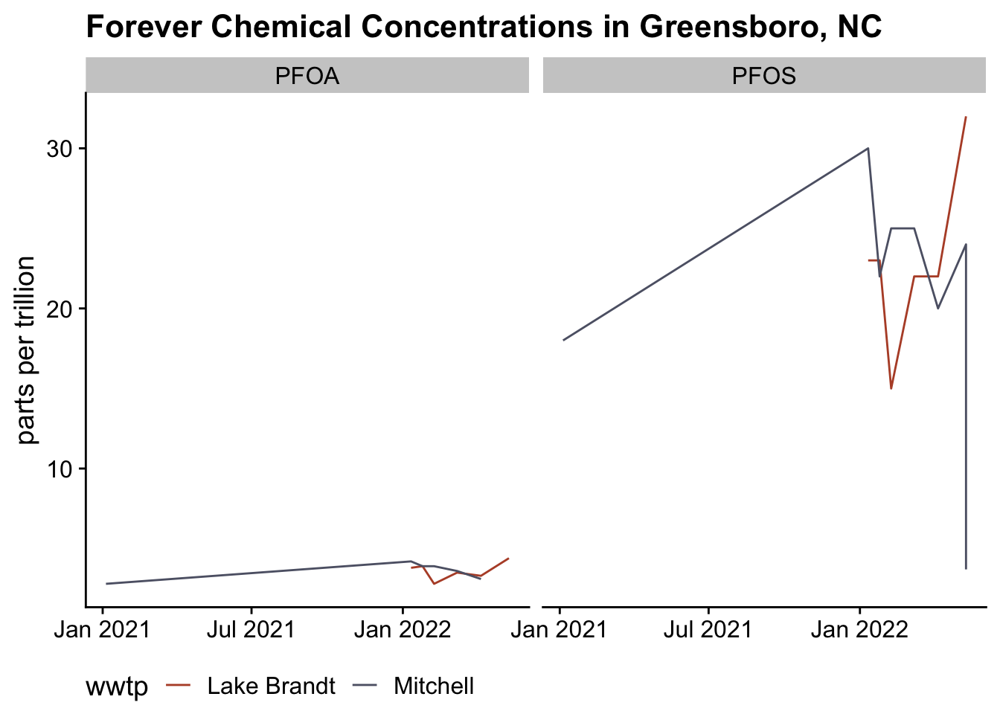
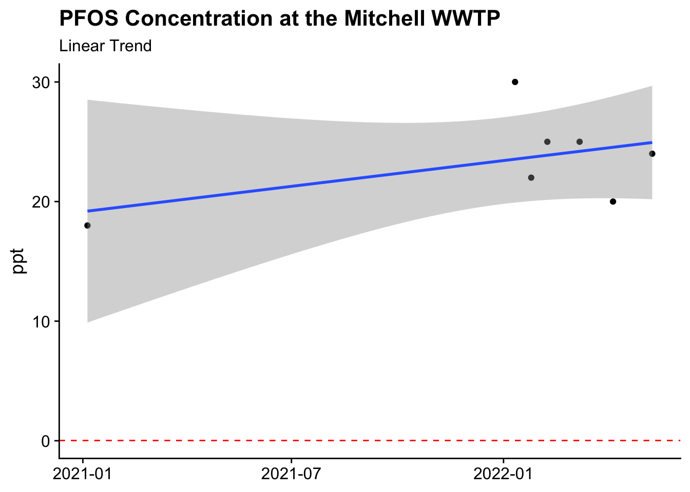

![]()
library(tidyverse)
library(rvest)
theme_set(cowplot::theme_cowplot())Forever Chemicals
The EPA recently issued updated guidance on acceptable levels of two so-called forever chemicals in the drinking water Perfluorooctanoic acid (PFOA) and perfluorinated alkylated substances (PFAS). These substances are used in non-stick applications and have become pervasive in every day life. Unfortunately, these substances are extraordinarily stable and don’t easy degrade in nature, are not captured by waste-water processing, and have been found for years in human serum. The EPA has been slowly lowering the acceptable levels in drinking water as the science evolves. As is the case with many long-term environment studies it takes a long time to gather observational data (with unknown effect sizes), but unsurprising to anyone they have found that even a little of these chemicals could have negative effects on human health.
So where are we?
By law, municipalities are supposed to post their drinking water composition so that the public knows what they are putting into their body. A hallmark of a developed society is having safe drinking water. One of the easiest to get to websites is the drinking water page for Greensboro, NC. Unfortunately for Greensboro, some industry friends have not been friends of the public and have been known to dump forever chemicals. We can use the standard tooling to pull down and visualize these data.
First, I’ll denote my website and use the awesome html_table feature to extract the tables on the website. I’ll be left with two tables representing the two treatment facilities that service Greensboro,NC.
url <- 'greensboro-nc.gov/departments/water-resources/water-system/pfos-pfoa-updates/pfos-pfoa-sample-results'
ses <- session(url = url)
ses_tabs <- html_table(ses)
names(ses_tabs) <- c("Lake Brandt Raw Water - Mitchell Water Treatment Plant Source",
"Mitchell Water Treatment Plant Point of Entry")
ses_tabs <- lapply(ses_tabs, function(x) {
setNames(x, c("date", "substance", "result", "unit"))}
)Now we can examine those tables and see that in the second table we captured some headers that need not be there. We can zip those away and the format and bind these tables.
str(ses_tabs)List of 2
$ Lake Brandt Raw Water - Mitchell Water Treatment Plant Source: tibble [12 × 4] (S3: tbl_df/tbl/data.frame)
..$ date : chr [1:12] "5/10/22" "5/10/22" "4/6/22" "4/6/22" ...
..$ substance: chr [1:12] "Perfluoroctanesulfonic acid (PFOS)" "Perfluorooctanoic acid (PFOA)" "Perfluoroctanesulfonic acid (PFOS)" "Perfluorooctanoic acid (PFOA)" ...
..$ result : num [1:12] 32 4.4 22 3.3 22 3.5 15 2.8 23 3.9 ...
..$ unit : chr [1:12] "ng/L (ppt)" "ng/L (ppt)" "ng/L (ppt)" "ng/L (ppt)" ...
$ Mitchell Water Treatment Plant Point of Entry : tibble [15 × 4] (S3: tbl_df/tbl/data.frame)
..$ date : chr [1:15] "Date sample\n taken" "5/10/22" "5/10/22" "4/6/22" ...
..$ substance: chr [1:15] "" "Perfluorooctanesulfonic acid (PFOS)" "Perfluorooctanesulfonic acid (PFOS)" "Perfluorooctanesulfonic acid (PFOS)" ...
..$ result : chr [1:15] "Result" "24" "3.7" "20" ...
..$ unit : chr [1:15] "Unit" "ng/L (ppt)" "ng/L (ppt)" "ng/L (ppt)" ...Now we bind and format with map call and a function to coerce the columns to the correct type.
ses_tabs[[2]] <- ses_tabs[[2]][-1,]
ses_tabs <- map(ses_tabs, function(x){
x %>%
mutate(date = lubridate::mdy(date),
result = as.numeric(result),
unit = as.character(unit))
})
ses_tabs <- bind_rows(ses_tabs, .id = "source")
head(ses_tabs %>%
select(date,substance,result))# A tibble: 6 × 3
date substance result
<date> <chr> <dbl>
1 2022-05-10 Perfluoroctanesulfonic acid (PFOS) 32
2 2022-05-10 Perfluorooctanoic acid (PFOA) 4.4
3 2022-04-06 Perfluoroctanesulfonic acid (PFOS) 22
4 2022-04-06 Perfluorooctanoic acid (PFOA) 3.3
5 2022-03-08 Perfluoroctanesulfonic acid (PFOS) 22
6 2022-03-08 Perfluorooctanoic acid (PFOA) 3.5Note that they say that a nanogram per Liter (ng/L) is equivalent to a part per trillion (ppt) which is a standard unit for acceptable contamination levels.
Let’s see what we’re drinking
We can start with a simple graph of these two chemicals over time.
ses_tabs$compound <- with(ses_tabs, stringr::str_extract(string = substance, "PFOA|PFOS"))
ses_tabs$wwtp <- with(ses_tabs, stringr::str_extract(string = source, "Lake Brandt|Mitchell"))
fig1 <- ses_tabs %>%
ggplot(aes(date, result, color = wwtp))+
geom_line()+
theme(legend.position = "bottom")+
facet_wrap(~compound)+
labs(
title = 'Forever Chemical Concentrations in Greensboro, NC',
y = "parts per trillion",
x = NULL)+
scale_x_date(date_labels = "%b %Y")+
MetBrewer::scale_color_met_d("Demuth")
fig1
Now the critical point is are these ok? According to the EPA again, the new limits are:
| Compound | Limit (ppt) |
|---|---|
| PFOA | 0.004 |
| PFOS | 0.02 |
I don’t need to draw any lines on the graph to saw that we are likely exceeding those limits with a high confidence.
Where it going?
Unfortunately, we don’t have a done of historical data upon which to build a model. The last two years of data are not available and earlier years are locked into pdfs. Regardless, we can fit a trend line.
dat_ts <- ses_tabs %>%
filter(compound=="PFOS" & wwtp == "Mitchell") %>%
group_by(date) %>%
filter(result == max(result)) %>%
ungroup()
dat_ts %>%
ggplot(aes(date, result))+
geom_point()+
geom_smooth(method = "lm")+
labs(
title = "PFOS Concentration at the Mitchell WWTP",
y = "ppt",
x = NULL,
subtitle = "Linear Trend"
)+
geom_hline(yintercept = 0.02, col = "red", lty =2)
Only have seven irregularly spaced data points makes this trend line a stretch. Additionally, we don’t have a good sense of the measurement error or the effect of seasonality on these measures, so it is tough to say what the trend i, but the major conclusion is that the concentration is well above the recommendation.
Reuse
Citation
BibTeX citation:
@online{dewitt2022,
author = {Michael DeWitt},
title = {Forever {Chemicals} in the {Water}},
date = {2022-07-03},
url = {https://michaeldewittjr.com/programming/2022-07-03-forever-chemicals-in-the-water},
langid = {en}
}
For attribution, please cite this work as:
Michael DeWitt. 2022. “Forever Chemicals in the Water.”
July 3, 2022. https://michaeldewittjr.com/programming/2022-07-03-forever-chemicals-in-the-water.